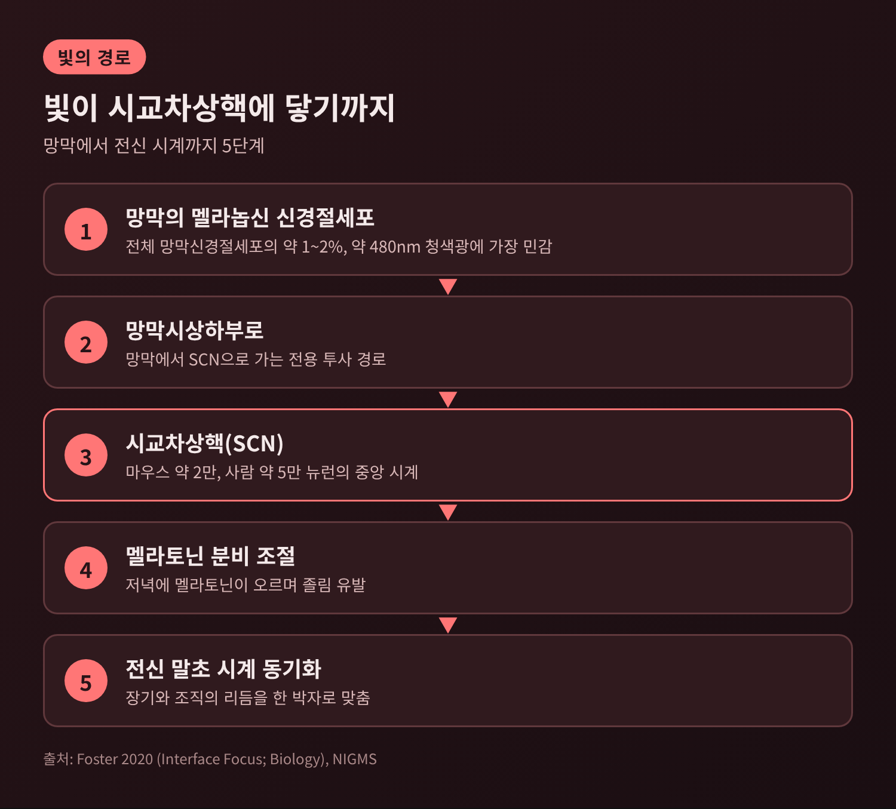
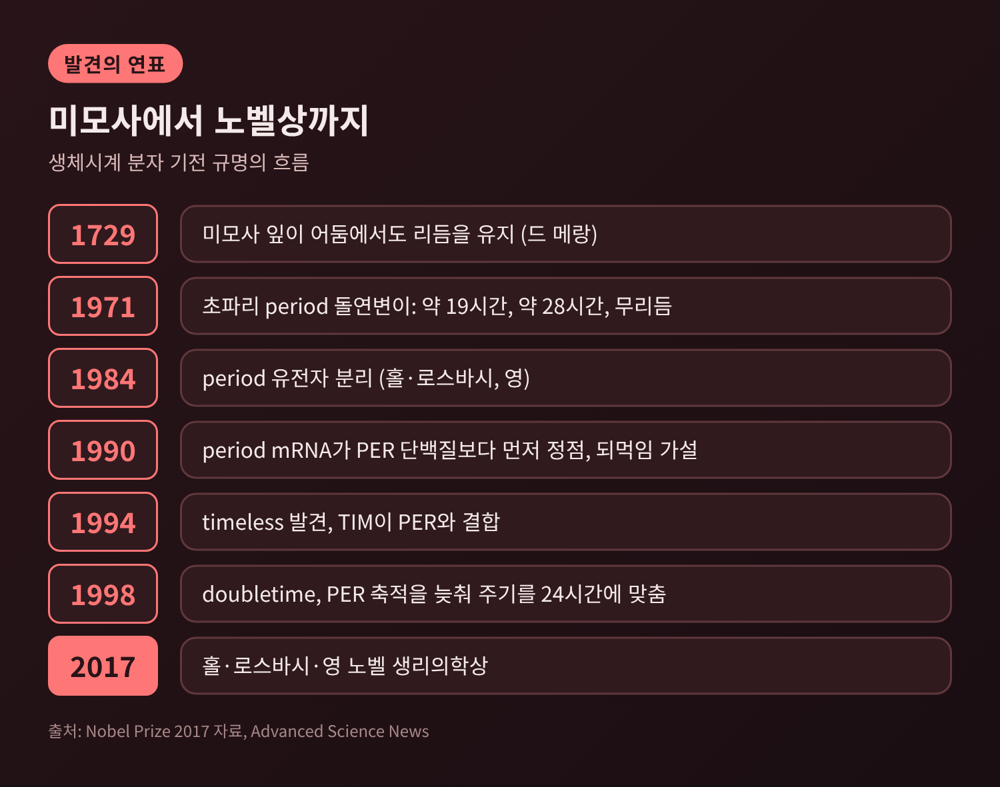
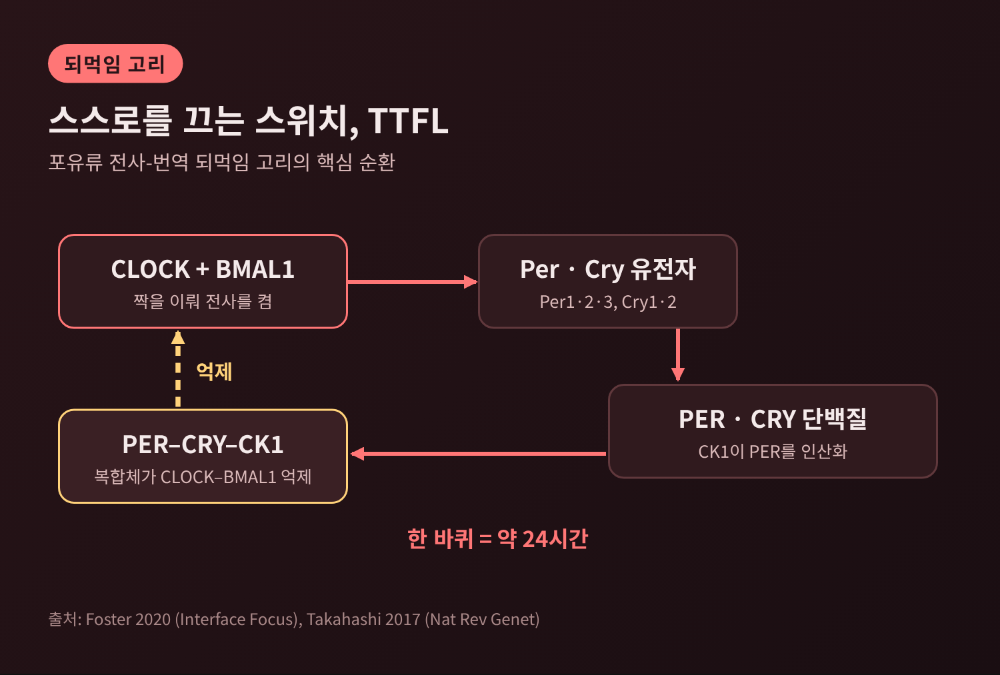
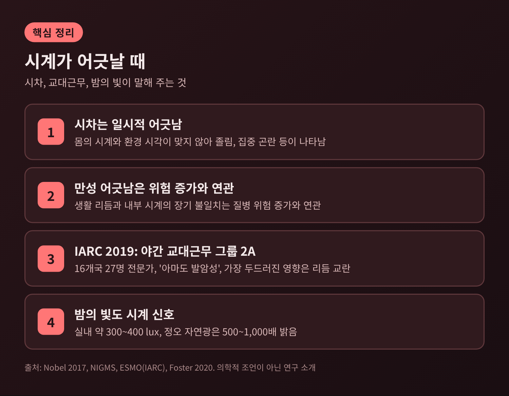

3줄 요약
이번 글에서는 생체시계가 분자 수준에서 어떻게 24시간 리듬을 만들고, 빛이 그 시계를 어떻게 재설정하는지 정리해 보겠습니다. 시교차상핵과 PER·CRY 되먹임 고리를 중심으로 하되, 노벨상으로 이어진 발견의 흐름과 시차·야간 조명이 주는 시사점까지 함께 다룹니다. 건강 처방이 아니라 원리를 이해하기 위한 글입니다.
우리 몸의 하루 리듬을 지휘하는 중앙 시계는 시상하부에 있는 시교차상핵, 줄여서 SCN입니다. 포유류에서는 이곳이 중앙 박동기 역할을 합니다. 간이나 근육 같은 대부분의 장기에도 스스로 진동하는 말초 시계가 있지만, 이들을 한 박자로 맞추는 것은 SCN입니다.
규모는 의외로 작습니다. 러셀 포스터의 2020년 리뷰에 따르면 SCN의 신경세포는 마우스에서 약 2만 개, 사람에서 약 5만 개입니다. 이 작은 핵이 뇌의 약 35개 영역으로 신호를 보냅니다.
SCN이 정말 주기를 쥐고 있는지 보여준 실험이 있습니다. 주기가 20시간인 돌연변이 햄스터의 SCN을 옮겨 심었더니, 리듬이 회복되었고 그 주기도 20시간이었습니다. 주기를 정하는 것은 SCN 자체라는 뜻입니다. 따로 떼어 배양한 SCN 뉴런의 리듬이 최소 6주간 이어졌다는 보고도 같은 방향을 가리킵니다.
SCN은 눈으로 들어온 빛을 근거로 멜라토닌 분비를 조절합니다. 저녁이 되면 멜라토닌이 오르고 졸음이 찾아옵니다. 미국 국립일반의학연구소(NIGMS)는 SCN이 장기와 조직 전체의 리듬을 동기화한다고 설명합니다.

분자 원리를 이해하려면 발견의 순서를 먼저 보는 편이 좋습니다.
시작은 1729년입니다. 프랑스의 천문학자 드 메랑은 미모사 잎이 빛이 없는 곳에서도 규칙적으로 여닫히는 것을 관찰했고, 식물에 내부 시계가 있을 가능성을 떠올렸습니다.
본격적인 유전학은 1971년에 시작되었습니다. 벤저와 코노프카가 초파리에서 세 종류의 돌연변이를 찾았습니다. 하나는 리듬이 사라졌고, 하나는 약 19시간, 다른 하나는 약 28시간 주기를 보였습니다. 세 돌연변이는 같은 유전자와 관련이 있었고, 이 유전자에 period라는 이름이 붙었습니다.
1984년에는 브랜다이스대의 제프리 홀과 마이클 로스바시, 록펠러대의 마이클 영이 각각 period 유전자를 분리하고 염기서열을 밝혔습니다.
이어진 관찰이 핵심입니다. period가 만드는 PER 단백질은 밤에 쌓이고 낮에 분해됩니다. 그 양이 24시간 주기로 오르내렸습니다. 1990년에는 period mRNA가 PER 단백질보다 몇 시간 먼저 정점에 이른다는 사실이 확인되었고, 홀과 로스바시는 PER가 자기 유전자의 활동을 억제한다는 가설을 세웠습니다. 스스로를 끄는 고리, 곧 음성 되먹임입니다.
퍼즐의 나머지는 영이 채웠습니다. 1994년 그는 timeless 유전자를 발견했습니다. 이 유전자가 만드는 TIM 단백질이 PER와 결합해야 둘이 핵으로 들어가 고리를 닫을 수 있었습니다. 이후 doubletime이 만드는 DBT 단백질이 PER의 축적을 늦춘다는 것이 드러났는데, 이 지연이 주기를 24시간에 맞추는 데 기여합니다.
2017년 10월 2일, 노벨위원회는 세 사람에게 "생체리듬을 조절하는 분자 기전의 발견"이라는 사유로 생리의학상을 수여했습니다. 위원회는 이들이 생체시계의 내부를 들여다볼 수 있게 했다고 평가했습니다.

초파리에서 확인된 원리는 포유류에서도 이어집니다. 포유류에도 CLOCK과 PER에 해당하는 상동 유전자가 있어 비슷한 역할을 한다고 노벨위원회 자료는 밝히고 있습니다.
포유류 시계의 골격은 전사-번역 되먹임 고리, 영문 약자로 TTFL입니다. 순서는 이렇습니다.
첫째, CLOCK과 BMAL1이 짝을 이루어 유전자 전사를 켭니다. 켜지는 대상에는 Per 유전자(Per1·Per2·Per3)와 Cry 유전자(Cry1·Cry2)가 있습니다.
둘째, 이 유전자들에서 PER와 CRY 단백질이 만들어집니다. 만들어진 단백질은 세포질에 쌓이고, 카세인 키나제 1(CK1)이 PER에 인산기를 붙여 줍니다.
셋째, PER–CRY–CK1 복합체가 되돌아와 CLOCK–BMAL1을 억제합니다. 자신을 만든 스위치를 스스로 끄는 셈입니다.
넷째, 초파리에서 PER가 낮 동안 분해되는 것처럼 억제 단백질이 줄어들면 억제가 풀리고, CLOCK–BMAL1이 다시 전사를 켭니다. 이 한 바퀴가 약 24시간입니다.
여기서 중요한 것은 시간 지연입니다. 단백질이 만들어지고, 인산화되고, 억제 복합체를 이루고, 분해되는 데 걸리는 시간이 주기를 결정합니다. 1998년 doubletime의 발견이 의미 있던 이유도 인산화가 이 지연의 한 축이기 때문입니다.
조지프 타카하시의 2017년 Nature Reviews Genetics 리뷰는 이 고리의 영향이 생각보다 넓다고 정리합니다. 각 세포가 자기 시계를 갖고, 고리는 전사인자 결합과 RNA 중합효소 II 모집, 염색질 재구성에까지 전반적으로 관여합니다. 표적 유전자는 대사와 세포 성장, 생리 기능과 밀접하게 닿아 있습니다.
한계도 짚어 두겠습니다. 이 글은 확인된 핵심 고리를 다루었을 뿐 모든 보조 고리를 설명하지는 않습니다. 또한 전사 없이도 진동이 가능하다는 보고가 있습니다. 2005년에는 남세균의 리듬이 정제된 단백질과 ATP만으로 시험관에서 재현되었고, 2011년에는 퍼옥시레독신의 산화 상태가 진동한다는 보고가 사람의 적혈구를 포함해 나왔습니다. 유전자 되먹임이 시계의 중심이라는 점은 분명하지만, 유일한 장치는 아닐 수 있습니다.

고리의 주기는 정확히 24시간이 아니라 약 24시간입니다. 매일 조금씩 어긋나는 시계를 지구의 하루에 맞추는 것이 빛입니다.
빛을 받아들이는 주인공은 막대세포나 원뿔세포가 아니라 멜라놉신(OPN4)을 가진 망막신경절세포입니다. 전체 망막신경절세포의 약 1~2%에 불과하며, 청색광 영역인 약 480nm에서 가장 민감합니다. 포스터 등의 2020년 리뷰는 마우스 측정값이 479~481nm이고 사람에서도 비슷하다고 정리합니다.
이 세포의 신호는 망막시상하부로를 따라 SCN에 닿습니다. SCN으로 가는 입력의 약 80%는 M1형, 약 20%는 M2형 세포에서 온다는 추적 연구가 있습니다. 막대·원뿔이 없는 마우스도 빛에 동조하기 때문에 이 두 세포가 필수는 아니고, 반응을 보조하는 역할로 이해됩니다.
빛의 효과는 언제 받느냐에 따라 달라집니다. 마우스 실험에서 주관적 밤의 초반에 받은 빛은 시계를 늦추고, 밤의 후반에 받은 빛은 시계를 앞당깁니다. 낮의 빛은 거의 영향을 주지 않습니다. 같은 자극이 시각에 따라 반대 방향의 이동을 만든다는 점이 특징입니다.
사람에게 그대로 적용하기는 조심스럽습니다. 마우스는 약 1럭스의 빛을 몇 분만 받아도 동조하지만, 사람은 수백 럭스 이상의 빛을 30분 넘게 받아야 하는 것으로 정리됩니다. 낮에 위상 반응이 거의 없는 구간이 있다는 보고와 낮의 빛도 동조에 기여한다는 보고가 엇갈린다는 점도 리뷰는 밝히고 있습니다. 연구 방법이 설치류와 크게 달라 직접 비교가 어렵다는 이유입니다.
초파리에서는 별도의 광 경로도 확인되었습니다. 1999년 보고에 따르면 빛으로 활성화된 크립토크롬이 TIM에 결합해 분해를 촉진합니다. 같은 이름의 단백질이 포유류에서는 주로 억제 복합체의 일원으로 일한다는 점이 흥미로운 대비입니다.
몸속 시계와 바깥 시간이 어긋나면 시차가 생깁니다. 노벨위원회의 설명에 따르면 몇 개의 시간대를 건너 몸의 시계가 환경과 일시적으로 어긋난 상태가 시차입니다. NIGMS는 졸림, 협응 저하, 학습과 집중의 어려움을 단기 영향으로 소개합니다.
더 오래 이어지는 어긋남도 있습니다. 교대근무자의 경우 포스터의 리뷰는 약 97%가 야간 일정에 적응하지 못한다고 정리합니다. 규모가 3,000명을 넘는 연구에서는 10년 이상의 야간근무가 인지·기억 점수 저하와 연관되었습니다.
2019년에는 국제암연구소(IARC)가 모노그래프 124권에서 야간 교대근무를 그룹 2A, 곧 인체에 대해 '아마도 발암성'으로 분류했습니다. 16개국 27명의 전문가가 모인 결과이며, 인체 근거는 제한적이고 실험동물 근거는 충분하며 기전 근거는 강하다는 판단이었습니다. 가장 두드러진 영향으로 지목된 것은 생체리듬의 교란입니다. 유방암, 전립선암, 대장암과의 연관이 제한적으로 보고되었습니다.
여기에 밤의 빛이 겹칩니다. 실내 조명은 대략 300~400럭스인데, 포스터는 자연광이 새벽 직후에도 그보다 50~100배, 정오에는 500~1,000배 밝다고 비교합니다. 그만큼 낮의 빛은 강한 신호이고, 밤의 인공 조명은 약해도 신호가 될 수 있습니다. NIGMS도 밤의 전자기기 빛이 생체시계를 혼란스럽게 할 수 있다고 안내합니다. 다만 전자책과 종이책을 비교한 연구에서 잠드는 시간이 늦어진 폭은 10분 미만이었으니, 효과의 크기는 따져서 읽을 필요가 있습니다.

정리하면 이렇습니다.
생체시계는 신비한 감각이 아니라 단백질이 만들어지고 사라지는 속도로 새겨진 시계입니다. CLOCK과 BMAL1이 켠 유전자의 산물이 되돌아와 스스로를 끄는 동안 약 24시간이 흐르고, 눈의 멜라놉신 세포가 보낸 빛 신호가 매일 그 시계를 지구의 하루에 맞춥니다.
"시계는 세포 안에서 돌고, 빛은 그 바늘을 맞춘다."
작은 초파리 돌연변이에서 출발한 질문이 사람의 수면과 근무 방식을 다시 보게 만든 셈입니다. 우리가 잠들고 깨는 일이 이토록 정교한 분자 장치 위에 놓여 있다는 사실을 알고 나면, 밤의 불빛 하나도 예전처럼 가볍게 보이지는 않을 것입니다.
※ 이 글은 연구 결과를 소개하는 정보 글이며 의학적 조언이 아닙니다. 건강 문제는 의료진과 상의하시기 바랍니다.